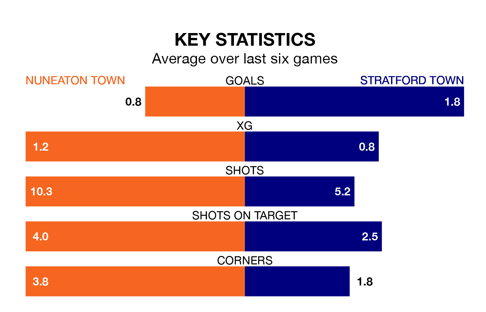

Nuneaton Town face Stratford Town on late Friday looking to secure a first win in seven Southern League Premier – Central games.
The Boro have lost three and drawn three matches since they last earned three points – against Kettering Town on November 28.
They face a Stratford side who have won three and drawn two over that time.
With 48 goals in 26 games so far this season, Stratford are scoring more than average in the league with 1.8 goals per game. And they are conceding at an average rate, letting in 40 goals at a rate of 1.5 per game.
Nuneaton, meanwhile, are below average scorers, with 1.4 goals per game, compared to a league average of 1.5. They have conceded 1.6 goals per game.
In the last 10 years, Nuneaton and Stratford have played each other on eight occasions. Nuneaton won four of them, Stratford two, and they drew twice.
On average, the Boro scored 1.4 goals and Stratford Town 1.2 in those matches.
Their last meeting was on September 30, when Nuneaton won 3-0 away.
Stratford Town are fourth in the table after 26 games, of which they have won 14 and drawn four, earning 46 points.
Nuneaton Town are 10 places behind the away side in 14th, with 10 wins and four draws putting them on 34 points.
Nuneaton's last match was on January 13, a 3-0 loss against St Ives Town.
Stratford beat Barwell 4-3 last time out, also on January 13.
Updated: 09:07 (UTC), 24/01/24